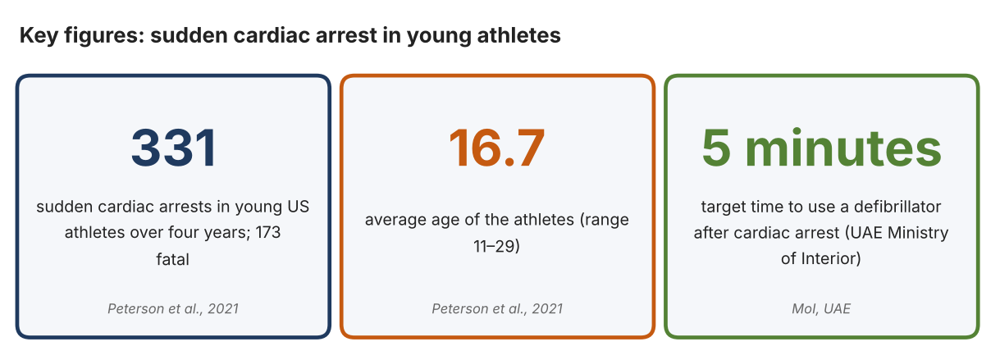
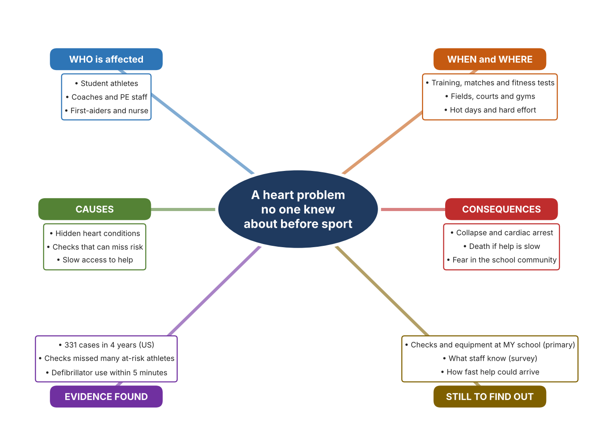
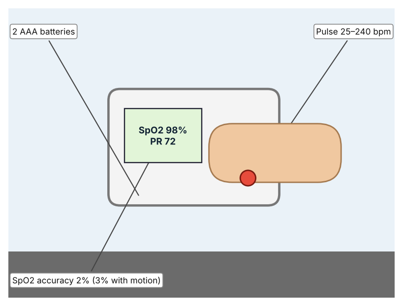
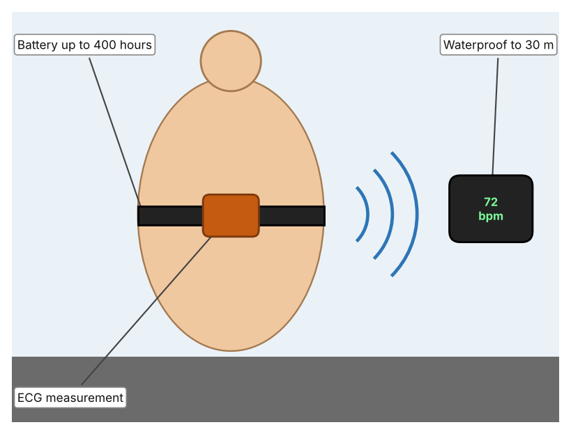
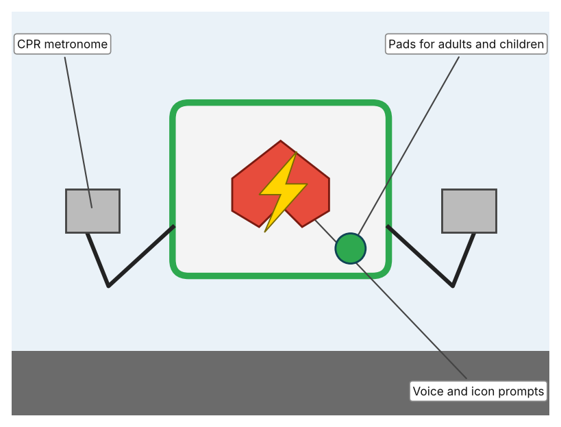

A1 · Design need
Identify and explain the problem faced by your client and community.
My client is the First Aid and Sports Safety Team of a Dubai school, represented by the school nurse. The team supports students who train and compete in school sport, and it wants to be sure that serious heart problems are noticed early and that help arrives fast if a student collapses. It needs the risk to student athletes to be reduced by checking basic health signs before hard exercise, and by preparing for emergencies.
The people most affected are student athletes, because intense exercise can bring out a hidden heart condition. Coaches and PE staff are a second group, because they are the first adults present and must act. The nurse and trained first-aiders are a third group, because they respond when something goes wrong.
The need is real because sudden cardiac arrest does happen in young athletes. A four-year US study confirmed 331 cases between 2014 and 2018, with 173 deaths, and found an average age of 16.7; the authors say that health history and physical examination before taking part has not identified many at-risk athletes, and recommend emergency action plans with access to a defibrillator (Peterson et al.). In the UAE, the Ministry of Interior states that a defibrillator should be used within five minutes of a cardiac arrest, because survival chances fall with each minute (Ministry of Interior). The US study describes American athletes, so I do not yet know how this applies to my school.
Figure 1 summarises the key numbers. The US study is large but does not describe the UAE, so I treat it as a pattern and not as a prediction for my school. In my own words: the event is rare, but when it happens there is very little time, so preparation cannot wait. Figure 2 is my mind map of the problem.
302 words


A2 · Research plan
Six research questions of different types, each with a priority, a research type and evidence.
| # | Question | Priority | Primary / secondary | Evidence | Brief answer |
|---|---|---|---|---|---|
| 1 | Factual: How many young athletes suffer sudden cardiac arrest, and how many survive? | High | Secondary | Peterson et al., 2021 (Appendix A, Source 1) | 331 confirmed cases in four years: 158 survivors and 173 deaths; average age 16.7; about 1 in 65,872 high-school athlete-years. |
| 2 | Factual: What do UAE authorities say about response time and defibrillators? | High | Secondary | Gulf News, 26 Sept. 2019 (Source 2); Ministry of Interior (Source 3) | Dubai ambulance services aim for a 4-minute response, against an 8-minute international standard, and meet it in 40–50% of calls; the Ministry says to use a defibrillator within 5 minutes. |
| 3 | Conceptual: What can be measured quickly before exercise, and what does a defibrillator do? | Medium | Secondary | Masimo page (Source 4); Polar page (Source 5); Philips page (Source 6) | Oxygen saturation and pulse can be read from a finger in seconds; a chest strap reads heart rhythm electrically; a defibrillator gives voice-guided instructions and a shock. |
| 4 | Debatable: Should schools rely on health checks before exercise, on monitoring during exercise, or on rapid emergency equipment? | Medium | Secondary | Appendix A, Sources 1, 4, 5 and 6 | Checks can miss hidden risk, monitoring shows warning signs but cannot diagnose, and equipment saves lives only after a collapse. My view: all three are needed. |
| 5 | Debatable (challenges my assumption, UAE source): Cardiac arrest in young athletes is so rare that a school does not need to prepare. | High | Secondary | Ministry of Interior (Source 3); Gulf News, 2019 (Source 2) | The US study counted 331 cases in four years. UAE authorities stress a 5-minute target and 4-minute ambulance goals met in only 40–50% of calls, so rare events still need preparation. I found no UAE school data. |
| 6 | Factual (primary): What checks, equipment and trained staff does our school have for emergencies, and what do staff know about them? | High | Primary | Own preparedness checklist and staff survey (Appendix A, Sources 7 and 8) | [Student data needed: write the checklist results (with permission from the school) and survey averages, then two sentences on the pattern you see.] |
A3 · Existing products
Three significantly different products, each analysed with ACCESS FM, with pros and cons.
Product 1: Fingertip pulse oximeter (Masimo MightySat Rx)

Illustration by the author based on the Masimo MightySat specifications, Medaval (Appendix A, Source 4). [Student: replace with a photo from the source, cited MLA 9]
Product 2: Chest-strap heart-rate sensor (Polar H10)

Illustration by the author based on the Polar H10 page, Polar (Appendix A, Source 5). [Student: replace with a photo from the source, cited MLA 9]
Product 3: Defibrillator (Philips HeartStart FRx)

Illustration by the author based on the HeartStart FRx page, Philips Heartstream (Appendix A, Source 6). [Student: replace with a photo from the source, cited MLA 9]
ACCESS FM analysis
| ACCESS FM | Product 1 | Product 2 | Product 3 |
|---|---|---|---|
| Aesthetics | Small clip-on device; looks are not described (Medaval). | Chest strap with a pod; styling is not described (Polar). | Portable case; green On/Off button and orange Shock button (Philips). |
| Cost | Price not stated (Medaval). | R 2,299 on the South African Polar page. | Price not stated (Philips). |
| Customer | Clinicians and coaches who need a quick check. | Athletes and coaches who need exact heart data. | Lay rescuers with basic training. |
| Environment | Two AAA batteries give about 1,800 spot checks. | CR2025 coin cell lasts up to 400 hours; non-rechargeable. | Disposable battery with a five-year shelf life and about four years installed (page for the related battery). |
| Size | 7.4 × 4.1 × 3.0 cm; 73 g. | 60 g (21 g without the strap). | Size and weight not stated. |
| Safety | Reads SpO2 and pulse only; not a diagnostic device. | Waterproof to 30 m (WR30). | Daily self-tests check the pads and circuit; the page does not give an IP rating. |
| Function | Measures SpO2 0–100% and pulse 25–240 bpm; Bluetooth on some models. | Measures electrical heart signal; Bluetooth LE and ANT+ with 90 m range; memory for one session of 30 hours. | Gives voice instructions and CPR guidance and delivers a shock when advised. |
| Materials | Materials are not stated. | Strap and pod; materials are not stated. | Materials are not stated. |
Pros and cons
| Product 1 | Product 2 | Product 3 | |
|---|---|---|---|
| Pro | Fast, small and shows oxygen and pulse in seconds. | Gives heart-signal data during exercise and has a long battery life. | Is the only item here that treats a cardiac arrest. |
| Con | Does not show heart rhythm and does not warn during exercise. | Costs R 2,299 and does not treat or diagnose. | Only helps after a collapse and the page does not give size, weight or price. |
A4 · Design brief
Restate the need, summarise the research and the existing products, and state the design intent.
My client, the First Aid and Sports Safety Team of a Dubai school, needs the risk to student athletes to be reduced through basic health checks before hard exercise and preparation for emergencies. The problem is real: a four-year US study confirmed 331 sudden cardiac arrests in young athletes, 173 of them fatal, with an average age of 16.7 (Appendix A, Source 1). UAE authorities state that a defibrillator should be used within five minutes (Appendix A, Source 3).
My research shows that checks before exercise do not identify every at-risk athlete, so planning for an emergency matters (Appendix A, Source 1). UAE ambulance services aim for a 4-minute response and meet it in about 40 to 50% of calls (Appendix A, Source 2). My debatable questions led me to decide that checks, monitoring and emergency equipment each cover only part of the problem, and my challenged assumption (that the event is too rare to prepare for) showed me that rarity does not remove the need. I will gather my own evidence with the preparedness checklist and the survey, always with permission (Appendix A, Sources 7 and 8).
I analysed three very different existing solutions. A fingertip oximeter reads oxygen and pulse in seconds, but it is not a diagnostic tool (Appendix A, Source 4). A chest-strap sensor records the heart's electrical signal for up to 400 hours on a battery, but it costs R 2,299 and does not treat anything (Appendix A, Source 5). A defibrillator guides a rescuer with voice prompts and delivers a shock, but it helps only after a collapse (Appendix A, Source 6). They give me three ideas for inspiration: a quick check, monitoring during effort, and emergency treatment. Each has a weakness that another covers.
My design intent is therefore to create a solution that measures simple health signs before and during exercise and helps staff recognise when a student should stop and get help. It must be affordable, easy for non-medical staff to use, safe and respectful of student privacy, and reliable in a busy sports setting. I have deliberately not fixed what form it will take. That decision will be made in Criterion B, after I analyse my own checklist and survey against the evidence in Appendix A.
376 words
Appendix A · Research notes and sources
Secondary sources in MLA 9, with notes and where each source is used.
| # | Source (MLA 9) | Key notes | Used in |
|---|---|---|---|
| 1 | Peterson, Danielle F., et al. “Aetiology and Incidence of Sudden Cardiac Arrest and Death in Young Competitive Athletes in the USA: A 4-Year Prospective Study.” British Journal of Sports Medicine, vol. 55, no. 21, 2021, pp. 1196–1203, pmc.ncbi.nlm.nih.gov/articles/PMC8551972. Accessed 21 Oct. 2026. | 331 confirmed cases, July 2014–June 2018: 158 survivors, 173 deaths; mean age 16.7 (11–29); 61.6% high school; about 1 in 65,872 athlete-years in high school; the pre-participation history and examination inadequately identified at-risk athletes; recommends emergency action plans with AED access. US data. | A1; A2 Q1, Q4; A4. |
| 2 | Saseendran, Sajila. “Dubai Gives out Life-Saving Device to Revive Cardiac Patients.” Gulf News, 26 Sept. 2019, gulfnews.com/uae/dubai-gives-out-life-saving-device-to-revive-cardiac-patients-1.66701952. Accessed 21 Oct. 2026. | Dubai Corporation for Ambulance Services planned 80 AEDs by the end of 2019; aims for 4-minute response against an 8-minute standard, met in 40–50% of calls; no cardiac arrest figures given. Source is from 2019. | A2 Q2 and Q5; A4. |
| 3 | Ministry of Interior. “MoI to Install Automated External Defibrillators (AED) in Public Places.” Abu Dhabi Police, www.adpolice.gov.ae/en/Media-Center/News/2021/06/30/MoI-to-install-Automated-External-Defibrillators--AED--in-public-places. Accessed 21 Oct. 2026. | First AED at Marina Mall; defibrillators credited with reducing cardiac-arrest mortality from over 90% to under 30%; use within five minutes. The page body is dated 2013 while the address shows 2021, so the date is uncertain. | A1; A2 Q2 and Q5; A4. |
| 4 | “Masimo MightySat Rx Specifications.” Medaval, www.medaval.ie/docs/specs/Masimo-MightySat-Specs.pdf. Accessed 21 Oct. 2026. | SpO2 0–100%, 2% accuracy (3% with motion); pulse 25–240 bpm, 3 bpm (5 with motion); 2 AAA, about 1,800 spot checks; 7.4 × 4.1 × 3.0 cm; 73 g; price not stated. | A2 Q3 and Q4; A3 Product 1; A4. |
| 5 | “Polar H10 Heart Rate Sensor.” Polar South Africa, www.polar.com/za/products/accessories/H10_heart_rate_sensor. Accessed 21 Oct. 2026. | ECG; CR2025 battery up to 400 h; WR30; Bluetooth LE and ANT+, 90 m; memory one 30-hour session; 60 g; R 2,299; no numeric accuracy figure. | A2 Q3 and Q4; A3 Product 2; A4. |
| 6 | “HeartStart FRx AED.” Philips Heartstream, www.heartstream.com/en-us/product/heartstart-frx/. Accessed 21 Oct. 2026. | Voice and icon prompts; CPR metronome; pre-connected pads for adults and children; daily self-tests; weight, size, IP rating and warranty not stated. | A2 Q3 and Q4; A3 Product 3; A4. |
| 7 | Primary: emergency preparedness checklist, completed by the student on [date]. Accessed own data. | [Student: summarise your counts.] | A2 primary question; A4. |
| 8 | Primary: survey of [number] people, completed on [date]. | [Student: summarise your averages.] | A2 primary question; A4. |
Primary research instrument 1: emergency preparedness checklist
Student completes the checklist with the school nurse's permission and only records what exists, never any student's health details.
| Item | Present (Y/N) | Where is it? | Staff trained (number) | Last checked (date) | Notes |
|---|---|---|---|---|---|
| Defibrillator (AED) | |||||
| First aid kit | |||||
| Emergency action plan | |||||
| Phone to call 999 or 997 |
Primary research instrument 2: survey
Rate each statement from 1 (strongly disagree) to 5 (strongly agree). Collect responses with permission and record no names.
| Statement | 1 | 2 | 3 | 4 | 5 | Total responses |
|---|---|---|---|---|---|---|
| I know where the nearest defibrillator is. | ||||||
| I know what to do if someone collapses. | ||||||
| Students should have a basic check before intense sport. | ||||||
| I would like to learn first aid and CPR. |